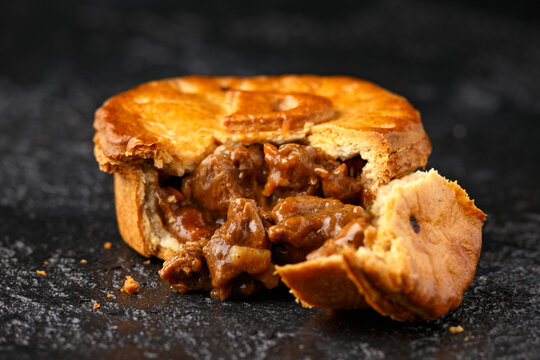

Steak Pie

Easy steak pie recipe by Barney Desmazery, original recipe at BBC Good Food.
Ingredients
- 3 tbsp sunflower oil
- 1kg braising steak, diced
- 2 onions, roughly chopped
- 3 tbsp plain flour
- 1 tbsp tomato ketchup
- 2 beef stock cubes mised with 600ml boiling water
- 1 egg yolk, beaten
Method
- To make the filling, heat the oven to 160C/140C fan/gas 3. Heat half the oil in a large casserole dish, brown the meat really well in batches, then set aside. Add the onions adding a drizzle more oil, then cook on a low heat for 5 mins until coloured.
- Scatter over the flour, stirring until the flour turns brown. Tip the meat and any juices back into the pan along with the ketchup and give it all a good stir. Pour over the stock, season, and bring to a simmer then cover with a lid and put in the oven for about 2 hrs, until the meat is tender. The filling can be made up to three days ahead and chilled or frozen for up to three months.
- To make the pie, heat the oven to 220C/200C fan/gas 7. Tip the filling into a 24-26cm rimmed pie dish and brush the rim of the dish with some yolk. Unravel the pastry, drape over the dish and use a knife to trim and press the edges against the side of the dish. Re-roll your trimmings to make a decoration if you like. Brush the pie heavily with egg yolk. Make a few little slits in the centre of the pie and bake for 40 mins until golden. Leave to stand for a few minutes before serving.